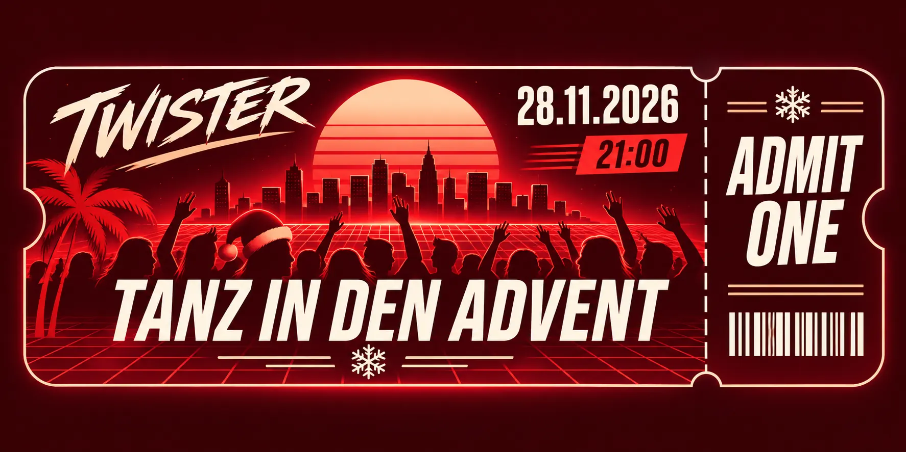

EARLY WAVE
12 €
Gedachte Frühbucherstufe mit regulärem Zugang zum Abend.
DEIN EINTRITT IN DIE NEONNACHT
Such dir deine Ticketidee aus und probiere unser Demo-Formular aus – ganz ohne echte Bestellung.

Die folgenden Preise sind frei erfunden und dienen ausschließlich der Gestaltung des Studienprojekts. Das Formular löst keine Zahlung, Reservierung oder Bestellung aus.
EARLY WAVE
Gedachte Frühbucherstufe mit regulärem Zugang zum Abend.
NEON STANDARD
Unsere Beispiel-Standardkarte für den Einlass ab 21 Uhr.
FRIENDS PACK
Gedachtes Zweierpaket, um gemeinsam in den Advent zu starten.
Fülle die Felder aus, um eine lokale Danke-Meldung zu sehen. Deine Eingaben werden nicht an einen Server übertragen und nicht gespeichert.
Für 16- und 17-Jährige ist der geplante Besuch nur mit gültiger schriftlicher Erziehungsbeauftragung und einer geeigneten volljährigen Begleitperson vorgesehen. Die Begleitperson muss die Aufsicht tatsächlich übernehmen. Ein Muttizettel allein garantiert keinen Einlass.
Volljährige Gäste benötigen keinen Muttizettel, sollten aber einen gültigen amtlichen Lichtbildausweis mitbringen. Auch für sie gelten die allgemeinen Hausregeln und Einlassbedingungen.
Da die Veranstaltung nicht real stattfindet, gibt es weder eine tatsächliche Einlasskontrolle noch einen Ticketversand.